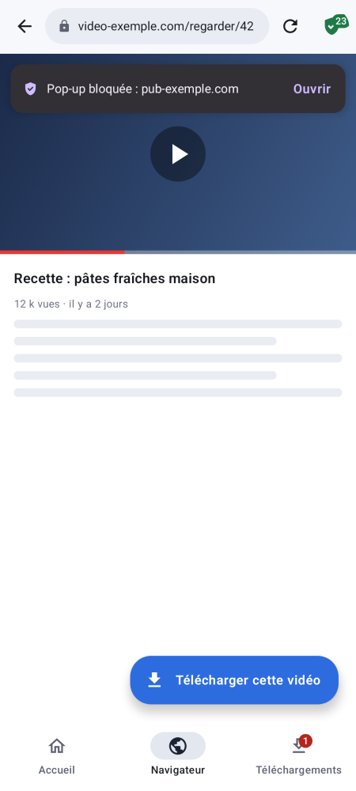
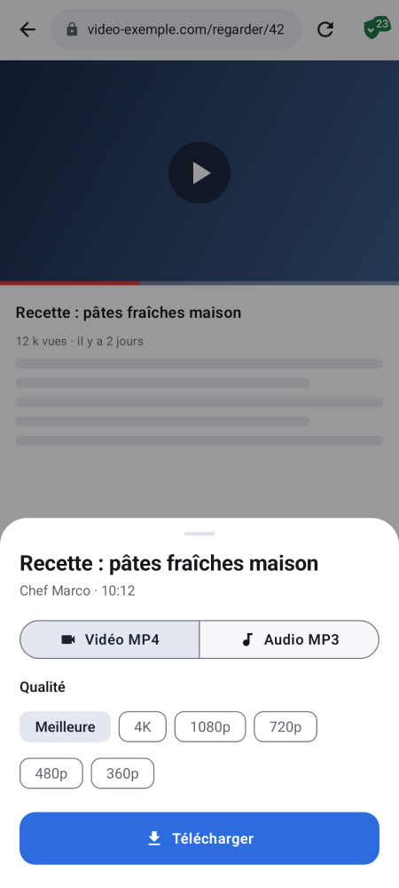
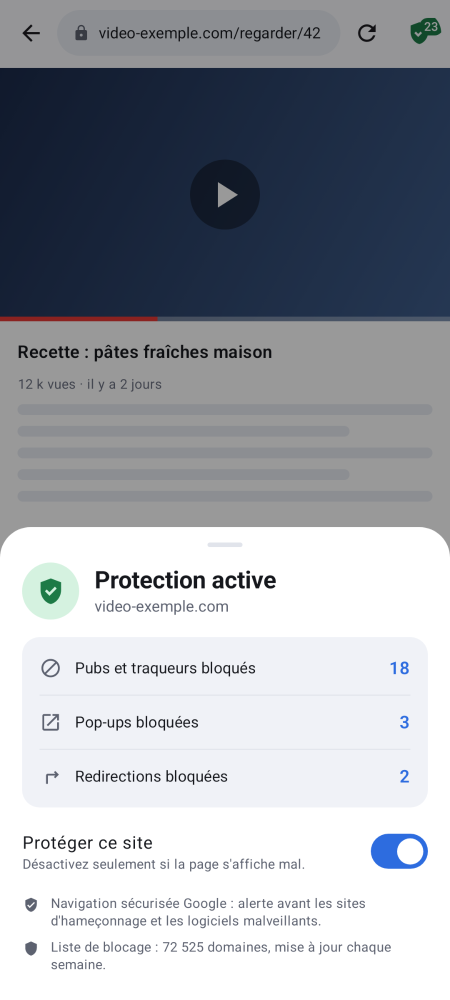
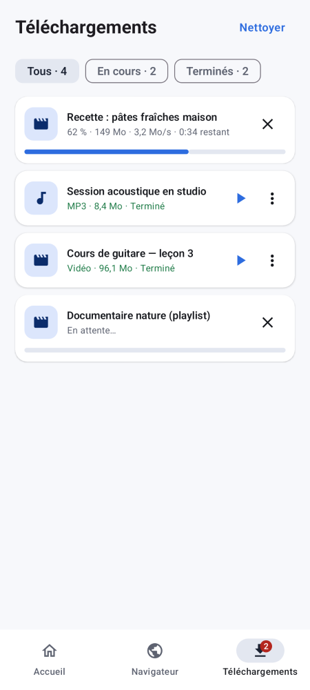
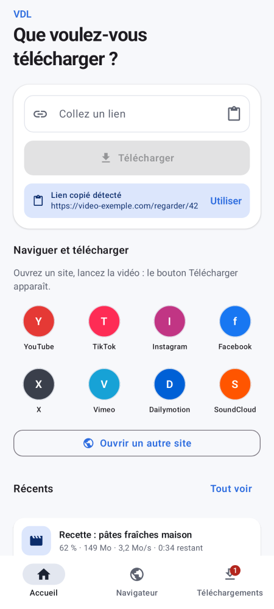

0.3.2Octobre 2026
Navigateur plus simple à utiliser
- Grand champ « Rechercher ou saisir une adresse » sur la page d'accueil du navigateur.
- Barre d'adresse plus visible.
Collez un lien, choisissez la qualité ou le MP3, c'est fait. Plus de 1 800 sites compatibles, téléchargements accélérés, gratuit.
Télécharger VDLWindows 10 et 11 (64 bits). Avec l'extension navigateur.
Télécharger l'installeur Version portable (.zip)Android 7 et plus. Navigateur intégré protégé qui détecte les vidéos.
Télécharger l'APK Version universelle (anciens téléphones)Mac Intel et Apple Silicon.
Bientôt disponibleApple n'autorise pas l'installation d'apps hors App Store.
Pas encore disponibleNaviguez sur n'importe quel site directement dans VDL. Dès qu'une vidéo se lance, le bouton « Télécharger cette vidéo » apparaît. Et pendant que vous naviguez, VDL vous protège.
Vidéos classiques et flux en streaming (HLS, DASH) sont repérés pendant la lecture, sur la plupart des sites.
Plus de 70 000 domaines de publicité, de pistage et de logiciels malveillants bloqués. Liste mise à jour chaque semaine.
Pop-ups et redirections automatiques vers d'autres sites bloquées. Alerte avant les sites d'hameçonnage connus.
Le bouclier de la barre d'adresse montre ce qui a été bloqué, et se désactive d'un geste pour un site qui s'affiche mal.





Inspiré des gestionnaires de téléchargements classiques, pensé pour la vidéo.
Choisissez la qualité. Fichiers MP4 lisibles partout, sous-titres intégrés en option.
Extrayez le son de n'importe quelle vidéo, de 128 à 320 kbps.
Jusqu'à 32 connexions par fichier, reprise après coupure ou redémarrage.
Lancez une vidéo : « Télécharger cette vidéo » apparaît. Extension sur ordinateur, navigateur intégré sur Android.
Sur Android, pubs, traqueurs, pop-ups et redirections piégées sont bloqués, et les sites dangereux signalés.
Choisissez les vidéos d'une playlist, mettez en pause, reprenez plus tard. VDL se met à jour tout seul.
VDL n'est pas distribué par les stores : votre appareil affichera un avertissement la première fois. C'est normal.
Cet écran apparaît pour tout logiciel récent non signé par un certificat payant.
Ensuite : ouvrez un site dans l'onglet Navigateur de VDL, ou depuis une autre appli : Partager → VDL.
VDL doit être ouvert (icône près de l'horloge) pour recevoir les liens.
Les applications installées vous préviennent automatiquement quand une nouvelle version sort.
Oui, entièrement : pas de publicité, pas de compte, pas d'abonnement.
Les logiciels récents distribués hors des stores et sans certificat payant déclenchent cet avertissement, quel que soit leur contenu. VDL est construit automatiquement à partir de son code source public.
Plus de 1 800 sites de vidéo et de musique, ainsi que les liens directs vers des fichiers. L'extension (ordinateur) et le navigateur intégré (Android) détectent aussi les vidéos lues sur la plupart des autres sites.
Les contenus protégés contre la copie (DRM), comme ceux des plateformes de streaming par abonnement, ne sont pas pris en charge. Une vidéo privée peut nécessiter d'activer « Cookies du navigateur » dans les réglages.
Il bloque les publicités, les traqueurs et plus de 70 000 domaines publicitaires ou malveillants (liste mise à jour chaque semaine), ainsi que les pop-ups et les redirections automatiques vers d'autres sites. La navigation sécurisée de Google vous avertit avant d'ouvrir un site d'hameçonnage ou de logiciel malveillant. Le bouclier dans la barre d'adresse montre ce qui a été bloqué sur la page.
La version Mac est prévue. Sur iPhone, Apple n'autorise pas l'installation d'applications en dehors de l'App Store.
VDL est un outil. Vous êtes responsable de son usage : téléchargez uniquement des contenus dont vous avez le droit de faire une copie (vos propres vidéos, contenus libres de droits, usage autorisé par l'auteur ou par la loi). Voir les conditions d'utilisation.